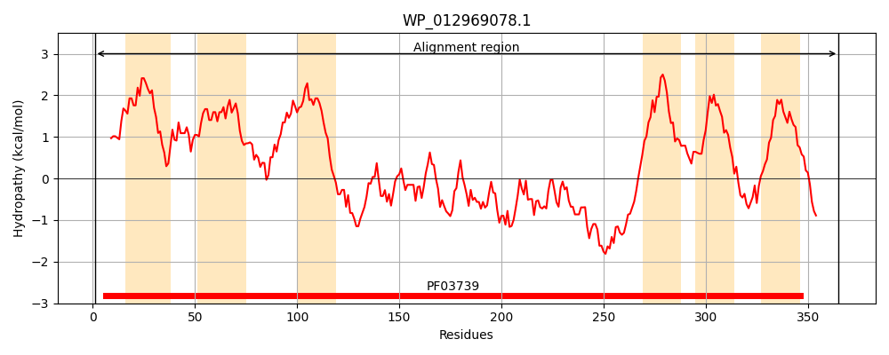
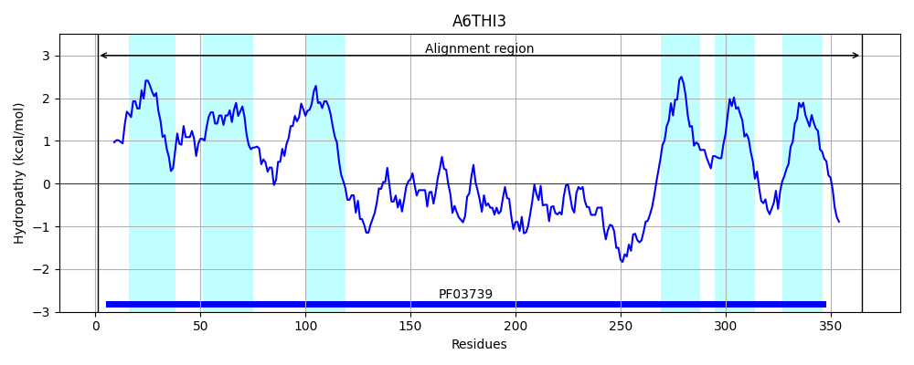
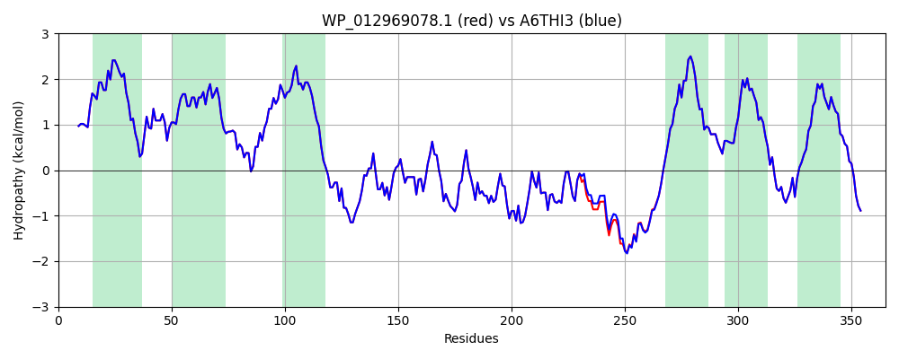

Hit Accession: A6THI3
Hit TCID: 3.A.1.152.9
Hit Description: gnl|BL_ORD_ID|634 gnl|TC-DB|A6THI3|3.A.1.152.9 Putative transmembrane protein, transport OS=Klebsiella pneumoniae subsp. pneumoniae (strain ATCC 700721 / MGH 78578) GN=yjgP PE=4 SV=1
Mach Len: 365
e:0.000000
Query TMS Count : 6
Hit TMS Count: 6
TMS-Overlap Score: 6.400000
Predicted Substrates:None
BLAST Alignment:
Score: 1833 , Bit scores: 710 bits, E-value: 0.0e+00, Alignment length: 365, Percentage identity: 99
Query: 1 MIIIRYLVRETLKSQLAILFILLLIFFCQKLVRILGAAVDGDIPTNLVLSLLGLGIPEMAQLILPLSLFLGLLMTLGKLYTESEITVMHACGLSKAVLIKAAMILALFTGAVAAVNVMWAGPWSSRHQDEVLAEAKANPGMAALAQGQFQQASDGNAVMFIESVNGNRFHDVFLAQLRPKGNARPSVVVADSGELSQQKDGSQVVTLNKGTRFEGTAMLRDFRITDFNNYQAIIGHQAVTSDPDDTEQMDMRTLWQTHTDRARAELHWRFTLVATVFIMALMVVPLSVVNPRQGRVLSMLPAMLLYLVFFLLQTSIKSNGGKGKMDPAIWMWAINLLYFALAVLLNLWDTVPMRRFRARFNKGAA 365
MIIIRYLVRETLKSQLAILFILLLIFFCQKLVRILGAAVDGDIPTNLVLSLLGLGIPEMAQLILPLSLFLGLLMTLGKLYTESEITVMHACGLSKAVLIKAAMILALFTGAVAAVNVMWAGPWSSRHQDEVLAEAKANPGMAALAQGQFQQASDGNAVMFIESVNGNRFHDVFLAQLRPKGNARPSVVVADSGELSQQKDGSQVVTLNKGTRFEGTAMLRDFRITDFNNYQAIIGHQAV++DPDDTEQMDMRTLW+THTDRARAELHWRFTLVATVFIMALMVVPLSVVNPRQGRVLSMLPAMLLYLVFFLLQTSIKSNGGKGKMDPAIWMWAINLLYFALAVLLNLWDTVPMRRFRARFNKGAA
Sbjct: 1 MIIIRYLVRETLKSQLAILFILLLIFFCQKLVRILGAAVDGDIPTNLVLSLLGLGIPEMAQLILPLSLFLGLLMTLGKLYTESEITVMHACGLSKAVLIKAAMILALFTGAVAAVNVMWAGPWSSRHQDEVLAEAKANPGMAALAQGQFQQASDGNAVMFIESVNGNRFHDVFLAQLRPKGNARPSVVVADSGELSQQKDGSQVVTLNKGTRFEGTAMLRDFRITDFNNYQAIIGHQAVSADPDDTEQMDMRTLWKTHTDRARAELHWRFTLVATVFIMALMVVPLSVVNPRQGRVLSMLPAMLLYLVFFLLQTSIKSNGGKGKMDPAIWMWAINLLYFALAVLLNLWDTVPMRRFRARFNKGAA 365 | Protein Hydropathy Plots: |
|---|
|  |  |
Pairwise Alignment-Hydropathy Plot:
|
|---|
|  |